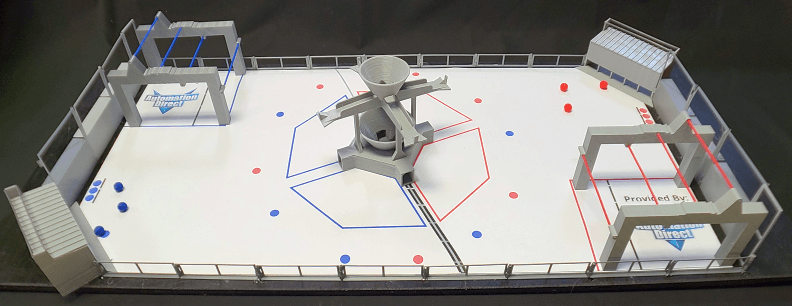
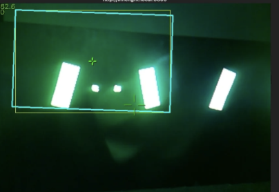
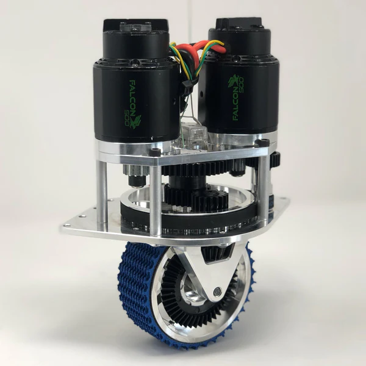
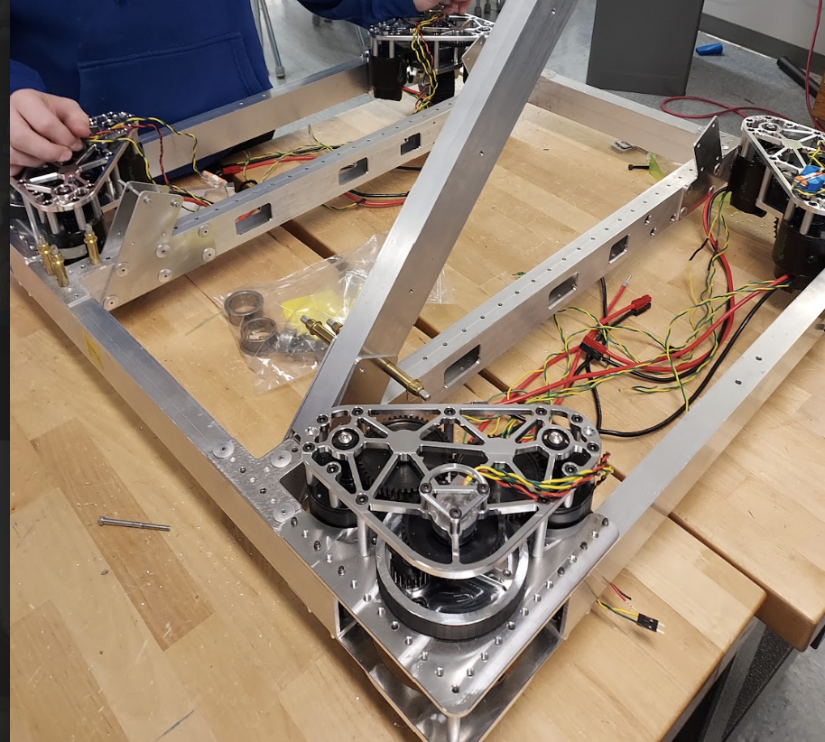
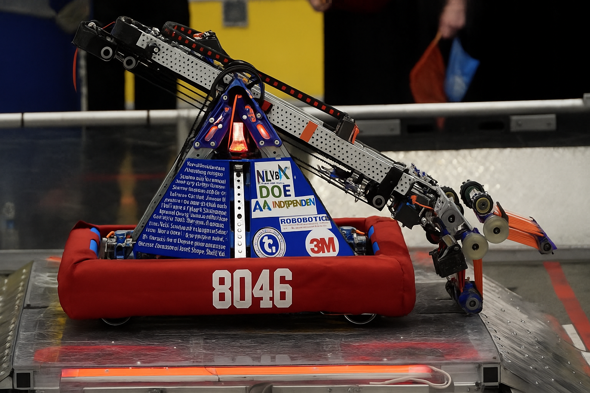

FRC context
The FIRST Robotics Competition challenges high-school teams to design, build, and program 120-pound robots in six weeks to compete in alliance-based matches. Teams engineer solutions for complex game objectives within strict size, weight, and safety constraints — demanding expertise across mechanical design, electrical systems, software, and real-time control.

Autonomous vision system
Challenge
The 2022 season required collecting and scoring inflated game pieces through an elevated hoop. Effective play meant autonomous scoring during the first 15 seconds of each match and precision manual control thereafter — both of which depend on accurate target acquisition. The field included retroreflective tape around scoring targets to support vision-based solutions.

Technical approach
I led the development of a real-time vision system using a Limelight vision processor to detect the retroreflective tape on scoring targets. We tuned the camera's mounting angle for maximum target visibility and programmed the Limelight to return 2D pixel coordinates for detected targets.
From that, we built a custom algorithm that used the target's vertical dimension to estimate distance and its horizontal dimension to compute the rotation needed to align. The output drove our swerve-drive autonomous control, letting the robot align itself and adjust launching parameters for efficient scoring.
Results
This system enabled consistent autonomous scoring from up to 10 feet away — a significant lift in match performance.

Swerve-drive system
Challenge
Before 2022 our tank-drive system limited maneuverability and prevented simultaneous translation and rotation, which hurt game-piece collection efficiency. I spearheaded the integration of a swerve drive, enabling omnidirectional movement and much higher agility on the field.
Technical approach
Given our team's limited prior experience with swerve drives, we purchased a COTS module system to shorten the path to a working prototype. We then deployed a FIRST-standard swerve-kinematics library and tuned the control algorithms to match our robot's dynamics.
We implemented field-centric control using a gyroscope for orientation feedback, so each joystick direction always mapped to the field's frame relative to the driver — regardless of the robot's heading. We then tuned the PID loops on each wheel module for precise speed and angle adjustments, sharpening overall responsiveness.


Results
The swerve drive significantly improved maneuverability, enabled complex movement patterns, and made rapid repositioning easy during matches. The upgrade drove a large jump in team performance — culminating in our highest regional placement at the time and a district-championship qualification.
Dynamic platform balancing
Challenge
The 2023 endgame asked robots to balance on a dynamic "Charge Station" platform for bonus points, but unpredictable motion caused most robots to slide off. I built an IMU-based control system for stable equilibrium while compensating for disturbances from other robots.
Technical approach
The IMU was already integrated on the robot for field-centric driving. I co-developed a PID-based balancing algorithm that adjusted wheel speeds in real-time to maintain a level orientation, allowing us to program a fully autonomous balancing routine for the endgame. Once balanced, two of the four wheels would rotate 90° to mechanically lock the robot in place, preventing roll-off from external forces.
Results
We achieved an estimated 95% success rate on autonomous balancing attempts during competition matches — consistent enough to make us a valuable alliance partner for endgame strategies.

Image credits
- Rapid React field layout: AutomationDirect — "2022 FIRST Robotics Rapid React 3D Printed Field." AutomationDirect Library, accessed Nov 6, 2025.
- MK4 swerve module: Swerve Drive Specialties — "MK4 Swerve Module." Accessed Nov 6, 2025.
- Limelight interface: Limelight Vision — "Getting Started with Pipelines." Limelight Documentation, accessed Nov 6, 2025.
Other images courtesy of Lakerbots 8046 FRC Team. Field layout, swerve module, and Limelight documentation images used for educational demonstration purposes.